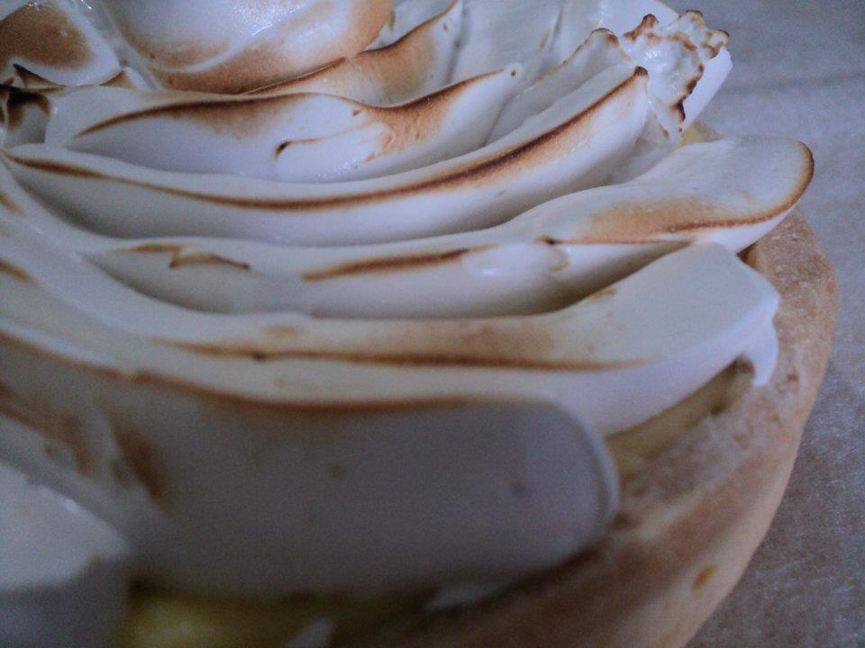

My free time.
I am a ver artistic person.
As I said before, I studied music for almost 10 years, but I am also very good with all handcrafts. I often make my own clothes, or plan new ideas for home decor.
There is a lot of different things I like to do in my free time, depending on my mood and the conditions.
Roller Skating
I would have to say that roller skating is my main hobby. It's not something that I can describe, every time I'm on my skates, I feel like I have all the power in the world.
Roller Derby is what I most do involving roller skating.
I've been a roller derby referee since 2013, I had the opportunity to do it in more than 7 countries and participate in the worldcups.
Guitar
Playing the guitar is one of the things that most enjoy, but it is a really prive thing to me.
Through the guitar I release all my stress, as I normaly put a lot of feeling on it.
Cooking
Regardless of having work on the culinary field for 10 years, I still love to cook.
I spetialize in cakes and sweets, but I love to cook any kind of meal, mostly if I can improvise instead of following a recipe.